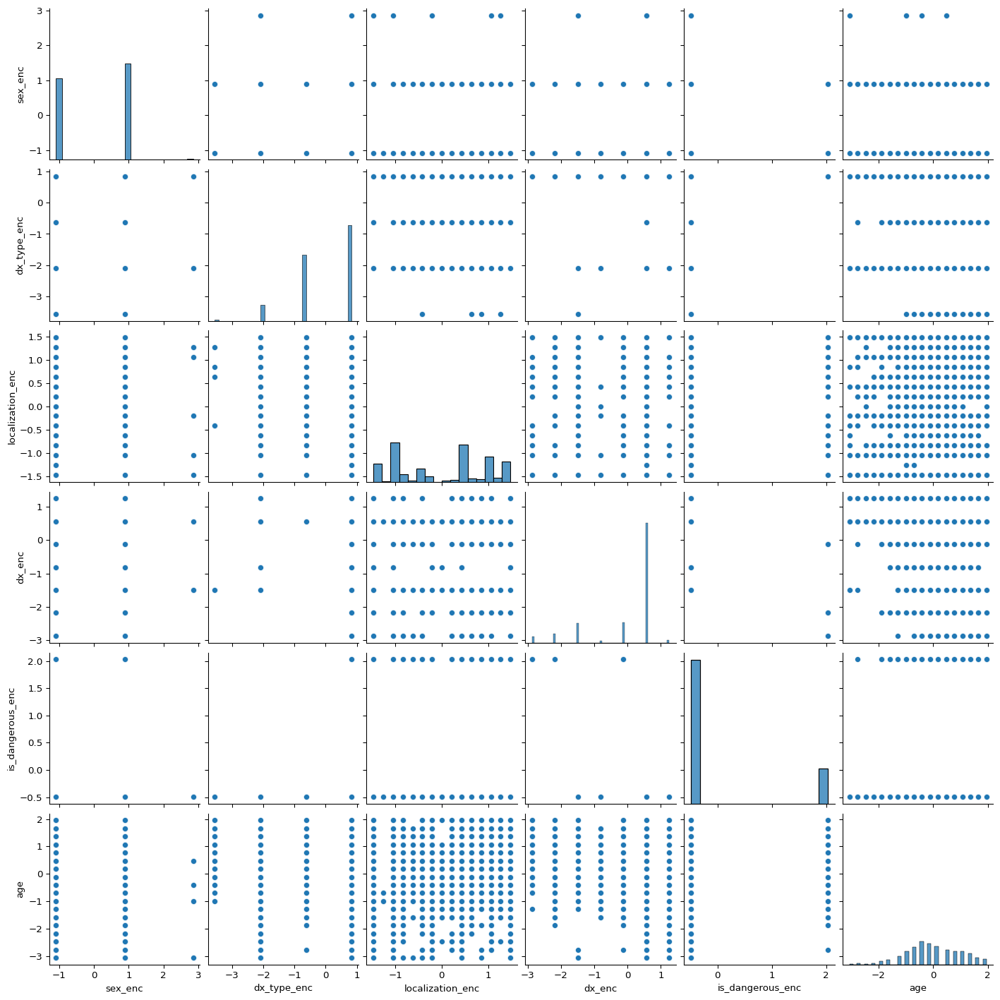

Wie in Abbildung Abbildung 1 dargestellt, zeigt sich eine recht breite Altersverteilung der im Datensatz enthaltenen Patientinnen und Patienten.
Das mittlere Alter beträgt 51.86 Jahre, mit einer Standardabweichung von 16.97 Jahren, was auf eine moderate Streuung hinweist. Der Median, also der Wert, der die Altersverteilung in zwei gleich große Hälften teilt, liegt bei 50.0 Jahren.
Die jüngste im Datensatz erfasste Person ist 0.0 Jahre alt, während die älteste 85.0 Jahre alt ist. Dies zeigt die große Altersspanne, die durch den Datensatz abgedeckt wird.
Zur Beurteilung möglicher geschlechtsspezifischer Unterschiede in der Diagnoseverteilung oder Lokalisation der Muttermale ist es wichtig, die Geschlechterverteilung der im Datensatz enthaltenen Personen zu betrachten (siehe Abbildung 2).
Die Analyse zeigt, dass der Datensatz insgesamt 10015 Patienten umfasst. Davon sind:
Um die Aussagekraft der Diagnosen im Datensatz besser einordnen zu können, ist es entscheidend, den Ursprung bzw. die Art der Diagnose zu kennen. Die Spalte dx_type gibt an, wie eine Hautläsion klassifiziert wurde. In Abbildung 3 wird die Verteilung dieser Diagnosearten visualisiert.
Insgesamt enthält der Datensatz 10015 Einträge mit bekannter Diagnosemethode.
Die Häufigkeit der Körperregionen, an denen Hautläsionen auftreten, ist eine wichtige Kennzahl, um zu verstehen, wo im Körper die meisten Hautprobleme lokalisiert sind. In der Grafik Abbildung 4 sind die Häufigkeiten der verschiedenen Körperregionen dargestellt.
Abbildung 4: Verteilung der Körperregion nach Diagnoseart
2.5 Interaktive 3D-Visualisierung nach Körperregion, Diagnoseart und Altersgruppe
Die folgende interaktive 3D-Darstellung ermöglicht es, die Verteilung der Diagnosen im Datensatz in Bezug auf drei wesentliche Dimensionen zu erkunden: Körperregion, Diagnoseart und Altersgruppe. Durch die Visualisierung werden diese Dimensionen als Achsen im dreidimensionalen Raum dargestellt, wobei jede Kombination von Körperregion, Diagnoseart und Altersgruppe durch einen Punkt repräsentiert wird. Die Größe der Punkte spiegelt die Anzahl der Diagnosen in der jeweiligen Kombination wider, während die Farbgebung die Diagnoseart visualisiert.
Die nachfolgende Analyse berücksichtigt, welche Diagnosen als gefährlich oder bösartig eingestuft werden. Im Rahmen dieser Analyse werden die Diagnosen “Melanom” (mel), “Basalzellkarzinom” (bcc) und “Aktinische Keratose / In-situ-Karzinom” (akiec) als gefährlich betrachtet, da diese häufig mit einem höheren Risiko verbunden sind.
Nach diesem Maßstab gibt es insgesamt 1937 gefährliche Diagnosen. Dies entspricht 19.34 % des gesamten Datensatzes.
Diese Verteilung wird in Abbildung 5 dargestellt. Die linke Grafik zeigt die Häufigkeit der einzelnen Diagnosen im Datensatz. Dabei ist ersichtlich, wie häufig jede Diagnoseart vertreten ist und welche Krankheitsbilder dominieren.
Die rechte Grafik visualisiert den Anteil der gefährlichen Diagnosen im Vergleich zu den nicht gefährlichen Diagnosen. Sie verdeutlicht den Prozentsatz an Patienten, bei denen eine Diagnose als potenziell gefährlich eingestuft wird. Dies ermöglicht eine erste Einschätzung der Häufigkeit gefährlicher Diagnosen innerhalb des gesamten Datensatzes und liefert wertvolle Informationen für weiterführende Analysen zur Risikobeurteilung.
3.1 Spearman Korrelation der numerisch kodierten Merkmale
Die Merkmale sex, dx_type, localization, dx werden in eine Ordinal-Skala überführt, um sie für die statistische Analyse mit numerischen Methoden zugänglich zu machen. Diese Umwandlung erlaubt es, diese kategorialen Merkmale in eine Reihenfolge zu bringen, ohne dabei die Informationen der Originalwerte zu verlieren.
Wie in Abbildung 6 zu erkennen ist, lassen sich zunächst keine auffälligen Abhängigkeiten der Merkmale untereinander erkennen. Die Verteilung der Daten in der Scattermatrix zeigt, dass es keine stark ausgeprägten linearen Beziehungen zwischen den kodierten Merkmalen gibt, was in erster Linie darauf hinweist, dass die Variablen größtenteils unabhängig voneinander sind.
Code
sns.pairplot( metadata_df_scaled, height=2.5)

Abbildung 6: Scattermatrix der numerisch kodierten Merkmale
Im weiteren Verlauf wird die Korrelation nach Spearman untersucht, um mögliche monotone Beziehungen zwischen den Merkmalen zu identifizieren. Der Spearman’sche Rangkorrelationskoeffizient misst die Stärke und Richtung einer monotonen Beziehung zwischen zwei Variablen. Die Formel für den Spearman-Rangkorrelationskoeffizienten lautet:
\[
\rho = 1 - \frac{6 \sum d_i^2}{n(n^2 - 1)}
\]
wobei \(d_i\) die Rangdifferenz und \(n\) die Anzahl der Beobachtungen ist. Er misst die Stärke der monotonen Beziehung zwischen zwei Variablen.
Anhand von Abbildung 7 lassen sich einige interessante Korrelationen beobachten. Es ist zu erkennen, dass zwischen dem Alter der Patienten und der Diagnoseart sowie zwischen der Diagnose und dem Typ der Diagnose signifikante Zusammenhänge bestehen. Diese Korrelationen deuten darauf hin, dass bestimmte Altersgruppen mit spezifischen Diagnosen häufiger in Verbindung stehen und bestimmte Diagnosearten miteinander verknüpft sind. Beispielsweise könnte das Alter als Faktor für die Häufigkeit bestimmter Hauterkrankungen relevant sein.
Abbildung 7: Korrelationsmatrix der numerisch kodierten Merkmale
3.2 Anzahl der gefähtlichen Diagnosen nach Alter
Abbildung 8 zeigt, dass die Anzahl gefährlicher Diagnosen mit zunehmendem Alter ansteigt. Dies unterstützt die zuvor in Kapitel 3.1 identifizierte Korrelation zwischen Alter und Diagnose und legt nahe, dass das Risiko schwerwiegender Erkrankungen mit dem Alter zunimmt.
Abbildung 8: Anzahl der gefährlichen Diagnosen nach Alter
3.3 Anzahl der gefährlichen Diagnosen nach Alter, Körperstelle und Diagnose
Eine detailliertere Betrachtung bietet Abbildung 9, in der gefährliche Diagnosen zusätzlich nach betroffener Körperstelle und Altersgruppe aufgeschlüsselt sind. Hier wird deutlich, dass bestimmte Diagnosen wie z.B. Melanome in bestimmten Altersgruppen und an spezifischen Körperregionen gehäuft auftreten, was Hinweise auf alters- und lokalitätsabhängige Risikomuster liefert.
Abbildung 9: Häufigkeit der gefährlichen Diagnosen nach Altersgruppe, Lokalisation und Diagnose
3.4 Anomalieerkennung in den Diagnosedaten
Im Rahmen dieser Analyse wird eine Anomalieerkennung durchgeführt, um ungewöhnliche oder seltene Diagnosen zu identifizieren, die von den typischen Mustern abweichen. Dies kann nützlich sein, um potenzielle Fehler oder seltene, aber schwerwiegende Erkrankungen zu erkennen, die möglicherweise eine besondere Aufmerksamkeit erfordern.
Zur Erkennung von Anomalien wird der Isolation Forest verwendet, ein Modell des überwachten maschinellen Lernens, das gut für die Identifikation von Ausreißern in hochdimensionalen Daten geeignet ist. Das Modell identifiziert Punkte, die in ihrer Datenverteilung besonders isoliert sind und damit als Anomalien gelten. Diese Anomalien könnten auf seltene, aber potenziell gefährliche Diagnosen hinweisen.
Die Ergebnisse der Anomalieerkennung werden in Abbildung 10 visualisiert. Aus der Analyse geht hervor, dass die Diagnoseart Konfokale Lasermikroskopie durch alle Altergruppen hinweg als Anomalie genkennzeichnet werden. Zudem lassen sich Anomalien Obere Extremität und Kopfhaut in den älteren Altersgruppen beobachten. Zudem weist die Diagnose Aktinische Keratose / In-situ-Karzinom die meisten Anomalien auf.
Mit 499 Anomalien repräsentieren die Anomalien 4.98% der im Datensatz aufgeführten Diagnosen. Abbildung 11 bestätigt im Vergleich zu Abbildung 1, dass der Anteil der älteren und jüngeren Altersgruppen in den Anomalien höher repräsentiert bist.
Abbildung 12 zeigt, dass der Anteil der weiblichen und unbekannten Patienten unter den Anomalien höher ist als der im gesamten Datensatz (siehe Abbildung 2).